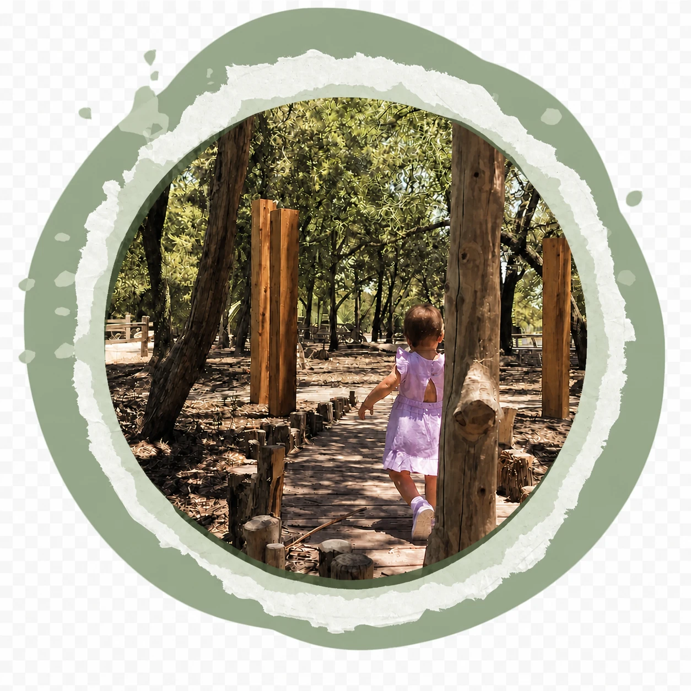
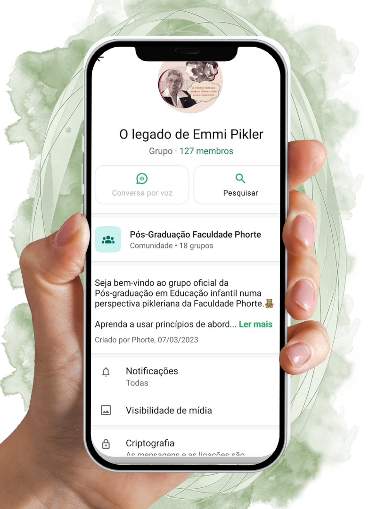

Live Educação · Perspectiva Pikleriana
Parabéns!
Sua inscrição está confirmada!
Em breve, você receberá novas informações no e-mail cadastrado e no grupo do WhatsApp.
Cadastro recebido com sucesso


01 · Comunidade
Enquanto espera o dia 14 chegar, que tal entrar em um grupo exclusivo?
Troque experiências com outros profissionais da educação, receba conteúdos exclusivos e novidades em primeira mão.
Faça parte de uma comunidade que compartilha a sua missão: transformar a educação e o processo de aprendizagem das crianças brasileiras.
Entrar no grupo do WhatsApp02 · Sobre a Phorte
Quer saber mais sobre a Faculdade Phorte e sobre o curso de Educação Infantil numa Perspectiva Pikleriana?
No vídeo a seguir, as professoras Esp. Bete Godoy e Ma. Maria Helena Pelizon, coordenadoras do curso, falam um pouco sobre sua trajetória profissional, sobre a instituição e sobre a nossa missão conjunta: oferecer uma formação completa para transformar sua jornada e a jornada dos seus alunos.